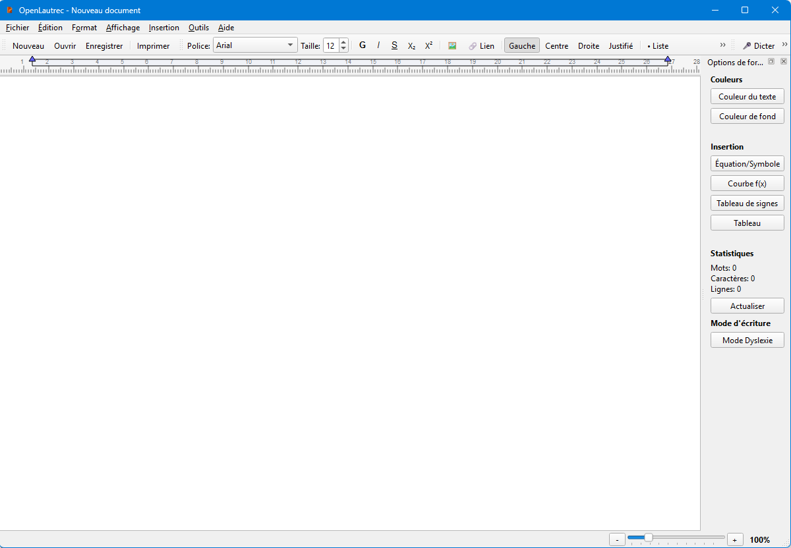

Le traitement de texte pour tous
OpenLautrec est un logiciel de traitement de texte innovant développé en Python, spécialement conçu pour les élèves de l'EREA Toulouse-Lautrec avec des besoins d'accessibilité avancés.
Des fonctionnalités pensées pour l'accessibilité
OpenLautrec intègre des outils innovants pour faciliter l'apprentissage et l'autonomie
Reconnaissance vocale
Dictez vos textes naturellement. OpenLautrec convertit votre voix en texte en temps réel avec une précision remarquable.
Synthèse vocale
Écoutez vos textes lus à voix haute. Parfait pour la relecture et la vérification de vos écrits.
Mode dyslexie
Police adaptée, espacement optimisé et coloration syllabique pour faciliter la lecture et l'écriture.
Calculatrice intégrée
Effectuez vos calculs sans quitter votre document. Module complet avec toutes les opérations essentielles.
Module géométrie
Créez des figures géométriques directement dans vos documents avec des outils intuitifs.
100% Python
Développé entièrement en Python, un logiciel libre, open-source et personnalisable selon vos besoins.
Le logiciel, en action
Faites défiler pour découvrir l'interface d'OpenLautrec, zone par zone

Une barre d'outils complète
Police, taille, gras, italique, souligné, indices et exposants, alignements, listes… Tous les outils essentiels de mise en forme sont accessibles en un clic, sans menus cachés.
Dictée vocale intégrée
Le bouton Dicter transforme votre voix en texte en temps réel. Idéal pour les élèves ayant des difficultés motrices ou d'écriture : on parle, OpenLautrec écrit.
Couleurs de texte et de fond
Le panneau latéral permet de changer la couleur du texte et du fond instantanément — pratique pour surligner, coder ses cours ou réduire la fatigue visuelle.
Insertion mathématique
Équations et symboles, courbes de fonctions f(x), tableaux de signes et tableaux classiques : les outils de maths s'insèrent directement dans le document.
Statistiques en direct
Mots, caractères, lignes : le compteur intégré suit votre progression pendant la rédaction. Parfait pour les rédactions avec un nombre de mots imposé.
Mode Dyslexie en un clic
Un seul bouton active la police adaptée, l'espacement optimisé et la coloration syllabique. L'accessibilité n'est pas une option cachée : elle est au premier plan.
Essayer OpenLautrecToutes les fonctionnalités
Découvrez en détail ce qui fait d'OpenLautrec un outil unique
🎤 Reconnaissance vocale vers texte
Dictée en temps réelLa technologie de reconnaissance vocale intégrée permet aux élèves de dicter leurs textes naturellement, sans avoir à taper au clavier. Cette fonctionnalité est particulièrement utile pour les élèves ayant des difficultés motrices ou d'écriture.
- Reconnaissance en français avec haute précision
- Conversion en temps réel pendant que vous parlez
- Correction automatique des erreurs courantes
- Support de la ponctuation vocale ("virgule", "point", etc.)
- Possibilité de dicter des commandes de formatage
🔊 Synthèse vocale (Texte vers Parole)
Lecture audioOpenLautrec peut lire à voix haute n'importe quel texte sélectionné, permettant aux élèves de vérifier leur travail par l'écoute et favorisant la compréhension.
- Voix naturelles et fluides en français
- Contrôle de la vitesse de lecture
- Surlignage synchronisé du texte lu
- Lecture de mots, phrases ou documents entiers
- Pause et reprise à tout moment
👁️ Mode dyslexie
Accessibilité visuelleUn mode spécialement conçu pour faciliter la lecture et l'écriture pour les personnes dyslexiques, avec des adaptations visuelles scientifiquement prouvées.
- Police OpenDyslexic avec lettres différenciées
- Espacement entre lettres et lignes augmenté
- Coloration alternée des syllabes
- Surlignage de la ligne active
- Contrastes optimisés pour réduire la fatigue visuelle
- Règle de lecture virtuelle ajustable
🧮 Module de calculatrice
Outils mathématiquesUne calculatrice complète intégrée directement dans l'éditeur de texte pour effectuer tous types de calculs sans changer d'application.
- Opérations de base (addition, soustraction, multiplication, division)
- Fonctions scientifiques (racine carrée, puissance, pourcentage)
- Historique des calculs
- Insertion directe des résultats dans le texte
- Support des expressions mathématiques complexes
- Mode calculatrice vocale (dictez vos opérations)
📐 Module géométrie
Création graphiqueDes outils de dessin géométrique permettant de créer des figures et schémas directement dans vos documents.
- Outils de tracé : lignes, cercles, polygones, angles
- Règle et compas virtuels
- Mesures automatiques (longueurs, angles, aires)
- Grille et repères magnétiques
- Annotation et légendage des figures
- Export des figures en haute qualité
⚙️ Autres fonctionnalités
Et plus encore...OpenLautrec inclut toutes les fonctionnalités essentielles d'un traitement de texte moderne, avec une interface simplifiée et accessible.
- Formatage de texte complet (gras, italique, souligné, couleurs)
- Vérification orthographique et grammaticale
- Insertion d'images et de tableaux
- Modèles de documents prédéfinis
- Export en PDF, DOCX et autres formats
- Interface personnalisable avec thèmes clairs et sombres
- Raccourcis clavier configurables
- Sauvegarde automatique
Télécharger OpenLautrec
Gratuit, libre et open-source. Disponible pour Windows, macOS et Linux.
Configuration requise
- Python 3.7 ou supérieur (non obligatoire, logiciel déjà compilé)
- 2 GB de RAM minimum (4 GB recommandé)
- 290 MB d'espace disque disponible
- Microphone pour la reconnaissance vocale
- Haut-parleurs ou casque pour la synthèse vocale
- Windows 10/11, macOS 10.14+, ou Linux (Ubuntu, Debian)
Informations d'accessibilité
Avertissement : ce logiciel est et doit rester utilisé à des fins éducatives. La version disponible n'est probablement pas la dernière version d'OpenLautrec. La version finale de développement (bugs et ralentissements probables, à ne pas déployer pour une utilisation scolaire) n'est accessible qu'en contactant le développeur.
Installation
- Téléchargez le fichier d'installation ci-dessus.
- Assurez-vous d'avoir installé toutes les mises à jour de votre PC.
- Exécutez le programme d'installation
OpenLautrec-Setup.exe. - Suivez les instructions à l'écran.
- Lancez OpenLautrec depuis votre menu d'applications.
Besoin d'aide ?
Consultez notre documentation ou contactez le support technique du groupe OpenLautrec pour toute assistance.